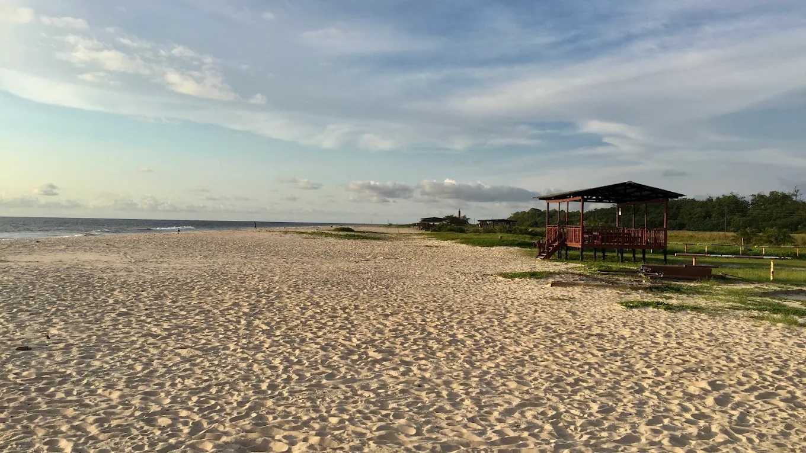
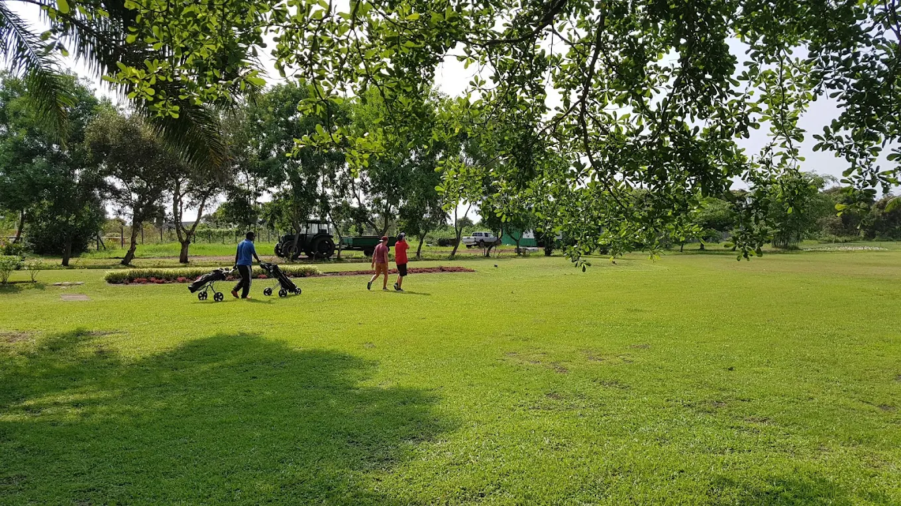
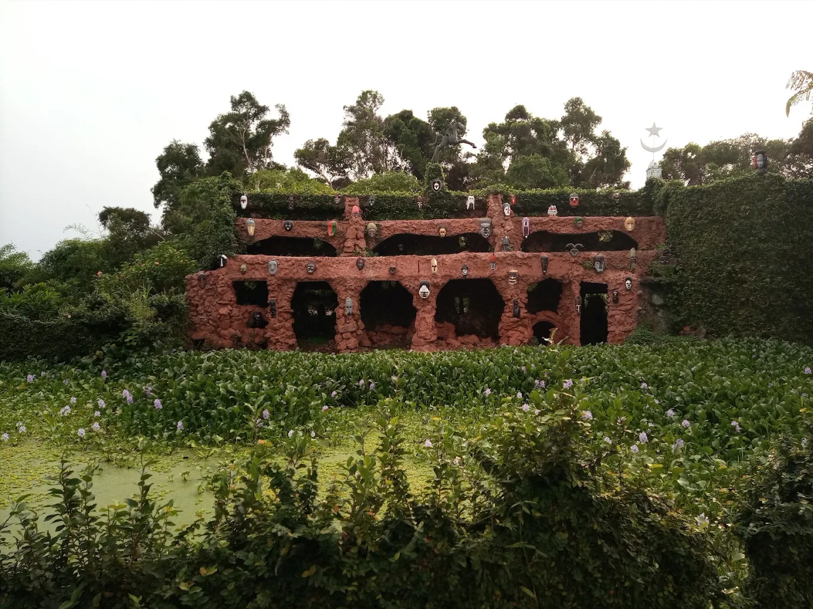
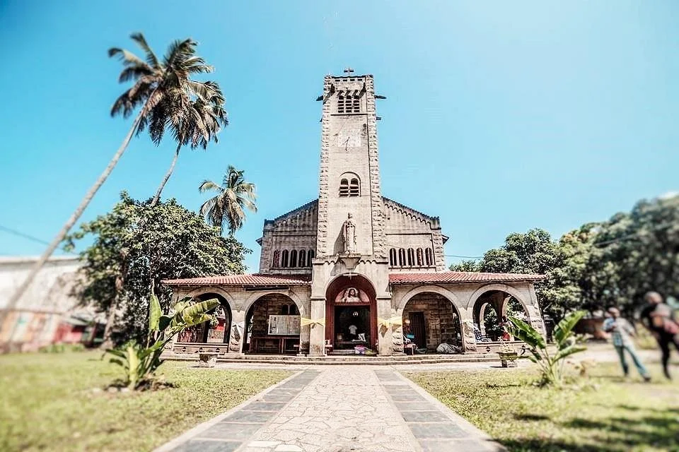

01Le Phare du Cap Lopez
Sentinelle historique à la pointe nord de l'île, face aux courants de l'Atlantique.
PatrimoineDémarches en ligne, grands projets, vie des quartiers : la Mairie de la capitale économique du Gabon à portée de main.
Port-Gentil porte une part essentielle de l'économie nationale. Notre responsabilité est de faire en sorte que cette richesse se traduise, pour chaque habitant, par des services publics plus proches, des quartiers plus sûrs et un cadre de vie plus agréable.
Modernisation de l'état civil, assainissement, voirie, emploi des jeunes : nous avançons chaque jour, avec vous et en toute transparence.

habitants sur l'Île Mandji, deuxième ville du pays
arrondissements et leurs mairies de proximité
projets et chantiers suivis publiquement
démarches accessibles depuis votre téléphone
Voirie, éclairage solaire, assainissement, équipements : suivez en temps réel l'avancement des projets qui changent votre quotidien.
Entre océan Atlantique, delta et mangroves, Port-Gentil offre des paysages uniques et une histoire maritime riche.
Faites défiler
01Sentinelle historique à la pointe nord de l'île, face aux courants de l'Atlantique.
PatrimoineLa nouvelle promenade solaire, lieu de rendez-vous des familles et des sportifs.
Promenade
03
04Un écosystème exceptionnel à explorer en pirogue, entre lagunes et forêts.
Nature
06Chaque habitant peut contribuer à rendre Port-Gentil plus propre, plus sûre et plus solidaire.
Nid-de-poule, lampadaire en panne, dépôt sauvage : prévenez les services en deux minutes, photo à l'appui.
Faire un signalementLe budget participatif finance les idées des habitants votées par les comités de développement des quartiers.
Déposer une idéeJournées citoyennes, événements, solidarité : rejoignez le réseau des bénévoles municipaux.
Rejoindre le réseau